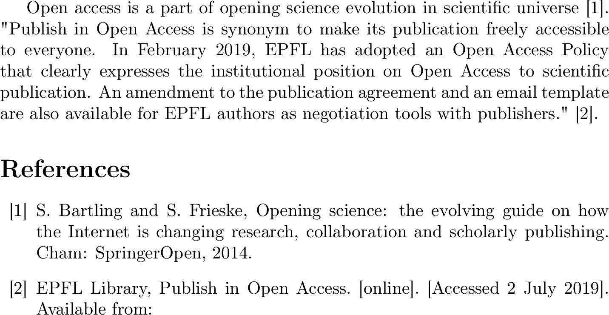

Citations
Overview
Teaching: 20 min
Exercises: 10 minQuestions
How can I introduce in-text citations and bibliographies in my LaTeX document?
Objectives
Create in-text citations
Create final bibliographies
Create bibliography’s datasets
Change bibliography’s styles
This part of the course displays how LaTeX deals with bibliography and in-text citations: by using the environment {thebibliography} and by using BibTeX.
The environment {thebibliography}
The commands of the environment {thebibliography} are embedded within LaTeX, these commands are integrated directly in your .tex file. This environment is useful for court bibliographies.
Each bibliography element is introduced by the command \bibitem.
06-citations-01
Tex file : 06-citations-01.tex
%<-----> ADDED to minimal <----->
Open access is a part of Opening science evolution in scientific universe \cite{Bartling2014}.
"Publish in Open Access is synonym to make its publication freely accessible to everyone. In February 2019, EPFL has adopted an Open Access Policy that clearly expresses the institutional position on Open Access to scientific
publication. An amendment to the publication agreement and an email template are also available for EPFL authors as negotiation tools with publishers." \cite{EPFLlibrary2019}.
\begin{thebibliography}{10}
\bibitem{Bartling2014}
S. Bartling and S. Frieske, Opening science: the evolving guide on how the Internet is changing research, collaboration and scholarly publishing. Cham: SpringerOpen, 2014.
\bibitem{EPFLlibrary2019}
EPFL Library, Publish in Open Access. [online]. [Accessed 2 July 2019]. Available from:
\end{thebibliography}
Compilation : 06-citations-01.pdf

The basic syntax for using \bibitem is \bibitem[label]{key}
The optional parameter [label] allows you to customize the labeling system for your bibliography entry. Without introducing this parameter, the entries will follow a numerical order as in the previous example.
The compulsory parameter {key} allows to link commands \bibitem and \cite.
In-text citations are introduced by the commands cite{key} as in the previous example cite{Barkling2014}. linking it with the bibliographic item containing the same key in the final bibliography.
Setting the indentation and width of labels in the final bibliography
The command
\begin{thebibliography}{}requires a mandatory argument. If you do not set this parameter, an error message is displayed. If you do not set it correctly the indentation of the final bibliography will be chaotic. In fact, this argument determines the width of the widest bibliographic label and the amount of indentation of the final bibliography.
If you use the environment {the bibliography} in a document defined as an article, the title of your final
bibliography will be “References” in English or “Références” if you define your document as French, but for a document defined as a book or a report it will display
“Bibliography”/en or “Biblographie”/fr.
Using BiBTeX
For larger document or/and easier management of the bibliography, Latex can be coupled with BiBTeX.
With BiBTeX, the bibliography database is contained in a .bib file.
The BiBTeX is a text file that contains the publication information, you can write it by hand but there is multiple software that can manages them for you graphicaly such as Jabref , Zotero or Mendeley
An bibliography entry looks like this :
@article{greenwade93,
author = "Greenwade, George D.",
title = "The {C}omprehensive {T}ex {A}rchive {N}etwork ({CTAN})",
year = "1993",
journal = "TUGBoat",
volume = "14",
number = "3",
pages = "342--351"
}Here the @article specify the category of the publication, then greenwade93is the key that will be use within the cite{}command in the latex document.
The other field (author, title….) describe the citation, it’s possible to have many fields inside a BiBTeX entry, some might not be displayed by LaTeX depending of the chosen style of citation inside the document.
Including the BiBTeX file inside a LaTeX document is done with two commands :
\bibliographystyle{}
\bibliography{}\bibliographystyle{} specify the style of the citation, it’s possible to create your style or to use already implemented style.
\bibliography{} just contains the name of the BiBTeX file (without the .bib)
BiBTeX and compilation
In order to use a BiBTeX file, the compilation process changes a little bit, indeed it’s necessary to called the
bibtexcommand between multiple compilation to include the reference inside your document. This is the commands you need to run :
pdflatex latexfilebibtex latexfilepdflatex latexfilepdflatex latexfileThis (heavy) ways is not always easy and it can be automatically done by texmaker, you can check and configure the quick build to do those actions for you.
06-citations-02
Tex file : 06-citations-02.tex
\documentclass[a4paper]{article}
\usepackage[utf8]{inputenc}
\usepackage{lmodern}
\usepackage[english]{babel}
\begin{document}
Hello World
This paper\cite{ARTICLE:1} is really good
\bibliographystyle{plain}
\bibliography{06-citations-02}
\end{document}
Bib file : 06-citations-02.bib
@ARTICLE{ARTICLE:1,
AUTHOR="John Doe",
TITLE="Title",
JOURNAL="Journal",
YEAR="2017",
}
Compilation : 06-citations-02.pdf
Key Points
For short bibliography you can use the
{thebibliography}environmentLong or more robust bibliography yuou can use a BiBTeX linked with your document